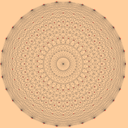

|  |
Arizona Winter School 2002
|
|
This year the professional development component of the Winter School will focus on some examples of the use of technology in teaching undergraduate mathematics. There will be four 1-hour presentations: Deborah Hughes Hallett: “Mathematics for the Reluctant”What mathematics and what teaching techniques are effective in a course taken by students to fulfill a general education mathematics requirement? This session will give a partial answer to this question using HIV testing policies as an example. We will also consider the role of simulation and of algebra for this audience. Shuzo Takahashi: “Spreadsheet Software as a Teaching Tool for Introductory Mathematics Courses”I will talk about one way to use spreadsheets in teaching mathematics, in particular, in teaching elementary probability theory to business majors. Other applications (i.e., calculus) will be briefly discussed. William Vélez: “The use of the Texas Instruments-Calculator Based Laboratory in the teaching of calculus.”In this talk I will present several experiments that have been developed using the TI-CBL unit in a calculus class. This unit is extremely portable and the data that is generated can be used to illustrate several ideas that appear in calculus. Douglas Ulmer: “A simple simulation to value stock options”I will present a spreadsheet simulation (used in the University of Arizona Business Mathematics sequence) to find the fair value of certain stock options. The underlying model is simple, in fact a little too simple: the analysis leading to the Black-Scholes formula shows that the fundamental premise of the model is incorrect. Nevertheless, the model is useful for teaching some aspects of probability and, with a small tweak, it produces options values that are reasonably consistent with the Black-Scholes formula. |
|